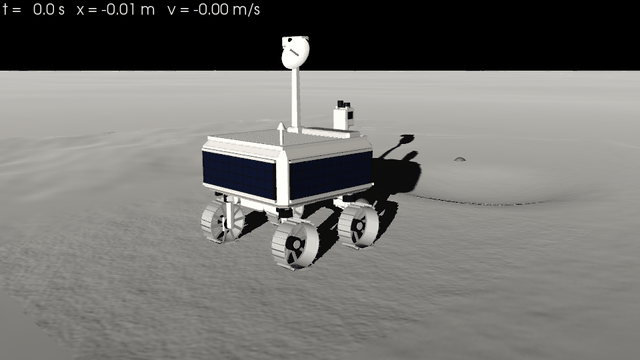
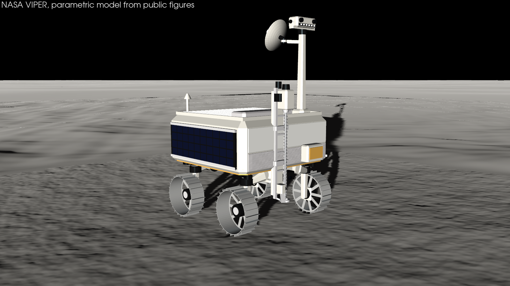
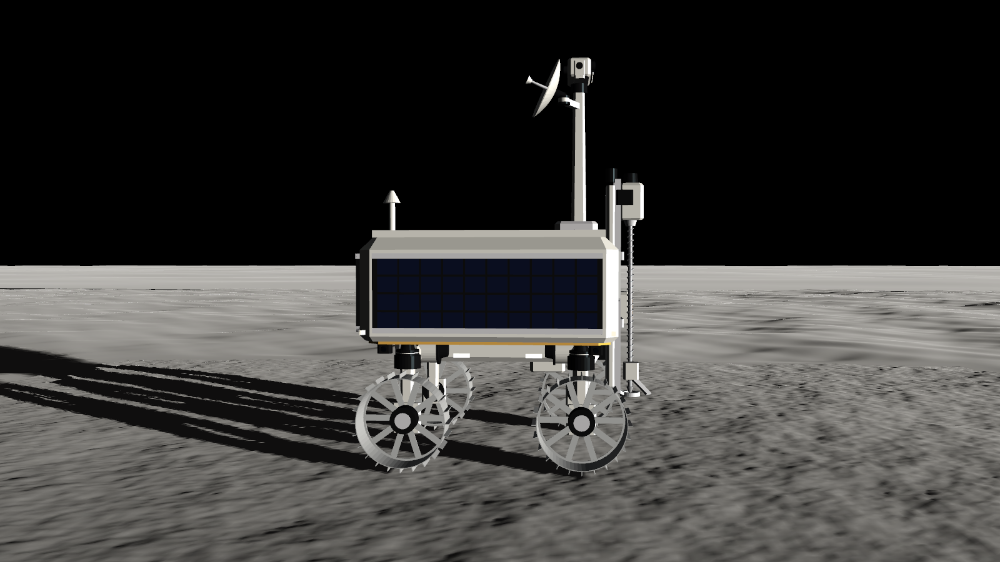
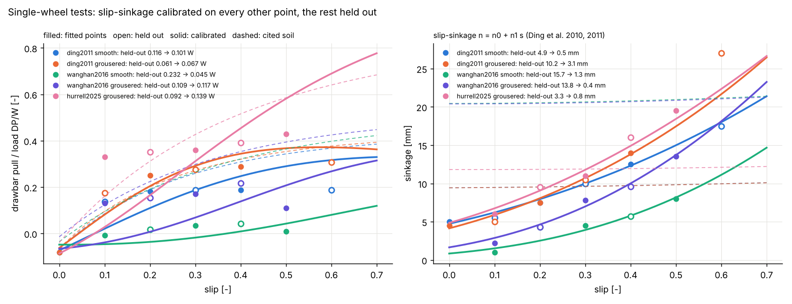
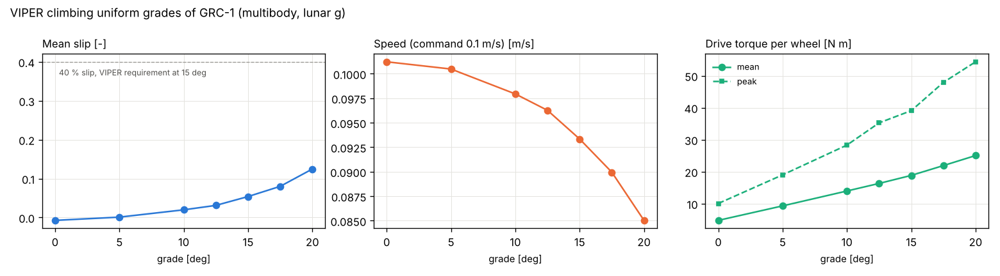
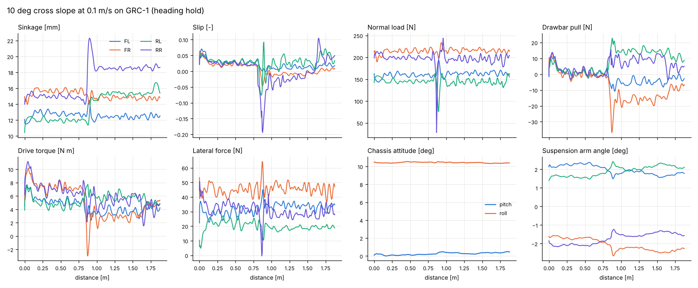
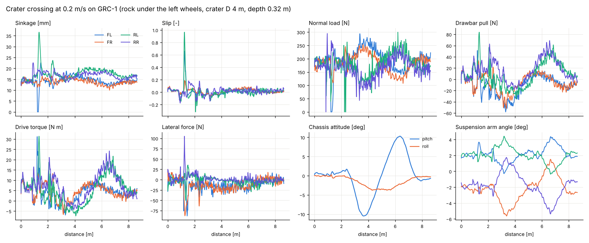
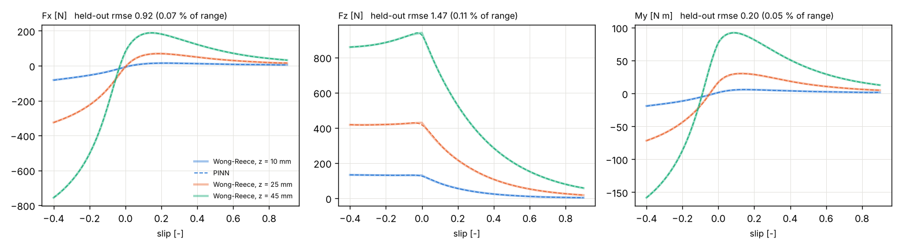

Lunar rover terramechanics in 3D¶

NASA's VIPER rover at real scale, driving on lunar regolith with Wong-Reece wheels and full multibody dynamics.
Everything on this page is a library feature: the soil database, the wheel model, the deformable terrain, the
multibody vehicle, the CAD, the renders and the PINN surrogate. The example
examples/use_cases/terramechanics/lunar_rover_3d.py is a thin script that puts them together.

import pinneapple as pp
from pinneapple_simulation.vehicle import scenarios, viz
spec = pp.vehicle.viper() # cited figures in spec.sources, CAD in spec.cad
spec.cad.export("viper.glb") # PBR materials; .stl too
site = scenarios.crater_site() # deformable regolith, a crater, rocks
run = pp.vehicle.VehicleSimulator(pp.vehicle.build_vehicle(spec), site,
pp.terramechanics.get_soil("GRC-1")).run(45.0, speed=0.2)
run.summary() # distance, slip, sinkage, energy, loads, attitude
viz.animate(run, site, "run.gif", mp4="run.mp4", field="normal_stress")
| Library module | What it holds |
|---|---|
pinneapple_simulation.terramechanics.soils |
Soil, get_soil: GRC-1, JSC-1A and the validation soils, each parameter with its source |
pinneapple_simulation.terramechanics.wong_reece |
WongReeceModel: stresses on the contact arc, forces, sinkage for a load, testbed operating points |
pinneapple_simulation.terramechanics.terrain |
DeformableTerrain (soil memory, ruts, grouser marks, stress maps), RigidRock |
pinneapple_simulation.terramechanics.testbed |
single-wheel testbed, the bundled published points, validation and (separate) calibration |
pinneapple_simulation.terramechanics.surrogate |
train_contact_surrogate: PINN of the wheel-soil contact with a held-out error report |
pinneapple_simulation.multibody |
MultibodyTree: floating base, revolute joints, linearly implicit steps |
pinneapple_simulation.vehicle |
VehicleSpec, build_vehicle, VehicleSimulator, viper(), scenarios, viz |
pinneapple_design.geometry.vehicle_cad |
parametric vehicle CAD, centre of mass and inertia from the meshes, glTF/STL |
pinneapple_tools.visualization.studio |
lighting presets, shadows (Sun shadows, Lunar-Lambert), planetary renders |
Shortcuts: pp.terramechanics, pp.multibody, pp.vehicle.
About the sources¶
Every number below either cites a source or is marked as an estimate with its reason. One caveat applies to all of them. From the environment this was built in, NASA's documents and the journal papers could only be found through a web search. The search returned text excerpts, but the PDFs, figures and photos could not be opened. So:
- the wording of the quotes, and the slide or page they come from, should be checked against the documents;
- the single-wheel test points are third-party readings of the published figures (see Validation), not tables from the papers;
- the renders were compared with VIPER's published dimensions and ratios and with the layout NASA's renders and photo captions describe (arrays on three sides, a white front without arrays, the mast at the front-left, the TRIDENT drill on a vertical rail at the front). The photographs themselves could not be downloaded, so a pixel-level side-by-side comparison is still to do.
The rover: NASA VIPER¶


| Quantity | Value used | Source |
|---|---|---|
| Envelope (L × W × H) | 1.7 × 1.7 × 2.5 m (model: 1.69 × 1.54 × 2.50 m) | Bluethmann (2024), VIPER Rover Overview and Mobility and Hardware, LSIC, NTRS 20240013903 |
| Mass | 450 kg (447 kg roving in LSIC 2024) | Francis & Sobey (2025), Design and Test of the VIPER Mobility Actuators, NTRS 20250000568 |
| Wheels | 4, 0.50 m diameter, 0.20 m wide, rigid sheet metal with spokes and rim grousers | Fong, VIPER briefings, NTRS 20220000441 and 20250004148 |
| Grousers | 24, 0.025 m tall | Hu et al. (2025), J. Field Robotics, doi:10.1002/rob.22597 (arXiv:2405.11001); 2.5 cm also in LSIC 2024 |
| Mobility module per corner | actuated suspension, steering and drive | Francis & Sobey (2025) |
| Suspension | ±40°, 200 N m | Fong (2022, 2025) |
| Steering | ±50° | McBryan, Francis & Sobey (2025), ICES-2025-147, NTRS 20250005201 |
| Track, wheelbase | ≈ 1.3 m, ≈ 1 m at nominal ride height; suspension changes ride height and track, steering changes track and wheelbase | Investigating the geotechnical properties of the lunar south pole with NASA VIPER's mobility system, Planet. Sci. J. (2025), doi:10.3847/PSJ/add13f |
| Speed | 0.20 m/s top, 0.10 m/s prospecting | Fong (2022), NTRS 20220000441 |
| Mast | tip ≈ 2.5 m above the wheel rims; NavCam pair and LED headlights on a pan-tilt head | NASA (2023), VIPER team raises its mighty mast |
| Antennas | gimballed high-gain (gimbal at ≈ 2.3 m), fixed low-gain | LSIC 2024 |
| Power and thermal | solar arrays on three sides, radiator on top | LSIC 2024; Fong (2022) |
| Drill | TRIDENT, 1 m class rotary-percussive, vertical, 10 cm bites; integrated into the rover's belly, stows inside and extends 1 m; < 20 kg, 200 N maximum weight on bit; deployment and feed stages, brush, chute, footpad | Zacny et al. (2021), LPSC 52, abstract 2400; NASA (2024), Into the Belly of the Rover; NTRS 20240000585; Chu et al., Honeybee Robotics / LSIC poster |
| Instruments | NSS on the front; NIRVSS and MSolo under the rover; one hazard camera per wheel | Andrews (2020), NTRS 20205000864; Fong (2022) |
Estimates (not found in the sources that could be reached). Each one is chosen to agree with the published envelope, track, wheelbase and wheel size:
- Suspension geometry: pivots under the chassis, arm length, and a 0.15 m steering offset. These give the 1.3 m track and 1.0 m wheelbase, and ±40° of arm travel changes ride height and track as the PSJ paper says.
- Chassis: a 1.44 × 1.48 m body with 7 cm chamfers on its edges, on a 1.20 × 0.40 m keel that carries the suspension actuators. It fills the 1.7 m envelope with the wheels outboard, and the wheels clear every chassis part when steered ±50° (tested).
- Faces: arrays on the left, right and aft faces; the front face white radiator over silver MLI, gold MLI on the belly, a radiator and a raised rim on the deck (layout from NASA renders; sizes estimated).
- Mast and head: a tapered square mast at the front-left of the deck, a pan-tilt head with the NavCam stereo pair (0.24 m baseline), an AftCam and a row of six LED lights, the high-gain antenna on a gimbal at ≈ 2.24 m.
- TRIDENT position: the drill rail stands on the front face, right of centre, with the auger below the belly and the footpad 0.36 m above the ground (from NASA renders and photos; the internal bay of the belly installation is not modelled). Rail 1.30 m, auger 25 mm, footpad 0.12 m: sized for the 1 m stroke.
- Instruments: NSS low on the front face, NIRVSS on the keel front near the drill, MSolo under the keel.
- Other dimensions: array panels covering the body faces; high-gain dish 0.40 m across; straight grousers (the shape was not found).
- Mass split: per corner, 12 kg wheel with its drive, 8 kg steering module and 10 kg arm; 330 kg chassis, split among structure, avionics, arrays, radiator, mast, drill and instruments. The centre of mass and the inertias are computed from the CAD meshes with these masses.
- Actuators: drive torque limit 80 N m (more than the soil torque at 90 % slip under the static lunar load, so traction, not the motor, limits climbing); wheel speed limit 2.5 rad/s; steering torque limit 60 N m.
All of this lives in pinneapple_simulation.vehicle.viper.VIPER_SOURCES. The CAD is built by
pinneapple_design.geometry.vehicle_cad:
- every part is a closed mesh with a material and a mass;
- the bodies (chassis, 4 arms, 4 steering modules, 4 wheels) get their mass, centre of mass and inertia tensor from
the meshes (Eberly's polyhedral mass properties, checked against boxes, cylinders and tubes in the tests);
- export(".glb") writes glTF with PBR materials (new studio materials: white paint, anodised black, wheel metal,
solar cells, radiator, gold and silver MLI, lens, LED, regolith, rock).
Computed for the model: total mass 450.0 kg, centre of mass 0.871 m above the ground at nominal ride height, and inertias about it 162 / 177 / 172 (roll / pitch / yaw) kg m² (glTF: viper.glb).
Wheel-soil model¶
WongReeceModel(soil, wheel, g=1.62) integrates the stresses on the contact arc with piecewise Gauss-Legendre
quadrature, vectorised over wheels.
- Normal stress: Bekker pressure-sinkage
σ = (k_c/b + k_φ) h^n, with the Wong-Reece shape: maximum atθ_m = (a0 + a1 s) θ_f, and the rear arc mapped onto the front one (Wong & Reece 1967; Wong 2008). - Shear: Janosi-Hanamoto
τ = (c + σ tan φ)(1 - e^(-j/K)), with the shear displacementj = R_s[(θ_f - θ) - (1 - s)(sin θ_f - sin θ)]. - Slip-sinkage: the exponent of the pressure-sinkage law grows with driving slip,
n = n0 + n1 s(Ding et al. 2010, 2011, who identified it from single-wheel tests on lunar simulant). Skid (s < 0) leaves it at n0 by default (slip_sinkage="drive";"both"uses|s|,"none"turns it off). A larger exponent means a softer response at the few-centimetre depths of a wheel, so the wheel sinks deeper as it slips and digs. - Grousers: shear on the equivalent radius
R_s = R + λ h(Ding et al. 2011, λ = 1 by default). The visual grouser marks come from the vehicle simulation (below). - Multi-pass: Wong's repetitive loading. The soil remembers the deepest sinkage it carried,
z_u. A later wheel reloads it elastically (p = k_u h,k_u = k_u0 + A_u z_u) up top_u = k z_u^n, then follows the virgin curve. As in Wong's treatment of consecutive wheels in one track, the shear displacement left by the wheel in front is carried over. A rear wheel in a rut therefore sinks deeper in total but needs less extra compaction, and its traction builds over a shorter arc. Both effects are tested. - Bulldozing: passive earth pressure on the soil wedge,
R_b = b(0.67 c z K_pc + 0.5 z² γ K_pγ), with Terzaghi's bearing-capacity factors (Bekker 1969; Wong 2008). It is applied on the side face by default. Ahead of the wheel it is optional (bulldozing="both"), because Wong-Reece'sσ sin θterm already contains the compaction resistance. - Lateral force and side slip: lateral shear with
j_y = R(1 - s)(θ_f - θ) tan β(Ishigami et al. 2007), plus sidewall bulldozing. The force opposes the side slip.
The model reproduces the library's earlier Bekker-Wong solver to 2e-6 relative error when the extensions are off.
Soils¶
get_soil(name) returns the parameters with soil.sources (and soil.provenance() as a table). Status of each
parameter:
| Soil | c [kPa] | φ [°] | k_c [kN/m^(n+1)] | k_φ [kN/m^(n+2)] | n | ρ [kg/m³] | K [m] | Status |
|---|---|---|---|---|---|---|---|---|
| GRC-1 | 0.25 | 38 | 0.7 | 505 | 0.8 | 1620 | 0.018 | c, φ, k_c, k_φ, n, ρ: secondary (the RoverDevKit catalogue, MIT, which attributes them to Oravec et al. 2010); K: estimate |
| JSC-1A | 1.0 | 45 | 1.4 | 820 | 1.0 | 1600 | 0.018 | secondary (RoverDevKit, attributed to Zeng et al. 2010). k_c, k_φ, n equal the classic Apollo lunar-soil set, so they are probably not a JSC-1A bevameter fit; K: estimate |
| Ding2011-TYII | 0.25 | 31.9 | 15.6 | 2407.4 | 1.10 | 1605 | 0.011 | secondary (Ding et al. 2011, Table 2, via RoverDevKit) |
| FJS-1/Hurrell2025 | 2.4 | 38 | 1.37 | 820 | 1.0 | 1740 | 0.018 | c, φ secondary (Hurrell et al. 2025); pressure-sinkage proxied by catalogue FJS-1 |
| KLS-1 | 1.716 | 40.6 | −44.06 | 3581.8 | 1.26 | 1600 | 0.018 | secondary (Wang & Han 2016; Lim et al. 2021) |
Other values, not measured for these simulants: - Wong-Reece coefficients: a0 = 0.40, a1 = 0.15, exit-angle ratio 1/3 (estimates, the library's earlier values). - Unloading modulus: k_u0 = 2e8 N/m³. Almost all of the sinkage stays plastic. - Slip-sinkage: n1 was not published for any of these simulants. The validation soils keep n1 = 0 (the cited state, the "before" of the calibration below). GRC-1 and JSC-1A use n1 = 0.8, an estimate: the rounded mean of n1 fitted on the training points of the five single-wheel series (0.64–0.94).
The Oravec et al. (2010) GRC-1 paper and the Zeng et al. (2010) JSC-1A paper are the primary sources to check these
against. The parameters the library used before under the name "GRC-1" (SoilParams(): c = 1.4 kPa, φ = 30°,
k_c = 1.37, k_φ = 814, n = 1) are kept as "Apollo-lunar". Their source was not recorded, and they are not the
GRC-1 values above.
Validation against single-wheel tests¶

testbed.validate(testbed.load_dataset(name, wheel)) runs the wheel at the measured slips. It finds the sinkage
for the test load, then the drawbar pull and the torque, using the soil parameters cited for that test. The bundled
points (terramechanics/data/single_wheel_tests.csv) are readings of the published figures made by RoverDevKit
(MIT licence, status digitised_approx). They are not tables from the papers, and they are used unchanged. No
tabulated single-wheel data for GRC-1 or JSC-1A could be obtained here; the NASA Glenn and WES reports that hold
such tables could not be opened.
With the cited soils (nothing fitted, n1 = 0), errors over all points:
| Test (load) | Drawbar pull RMSE | RMSE / load | Sinkage RMSE | Torque RMSE |
|---|---|---|---|---|
| ding2011 smooth (80.0 N) | 7.7 N | 0.096 | 4.2 mm | 0.58 N m |
| ding2011 grousered (80.0 N) | 4.0 N | 0.050 | 7.7 mm | 0.53 N m |
| wanghan2016 smooth (58.9 N) | 14.4 N | 0.244 | 16.1 mm | 0.82 N m |
| wanghan2016 grousered (58.9 N) | 9.2 N | 0.156 | 13.6 mm | 0.54 N m |
| hurrell2025 grousered (24.5 N) | 3.0 N | 0.122 | 4.7 mm | not reported |
With a constant exponent the model's sinkage is almost flat with slip (≈ 10, 12 and 20 mm), while every test series rises, from ≈ 5 mm at zero slip to 15–27 mm at 0.6 slip, and the model over-predicts the sinkage at low slip.
Slip-sinkage calibration with held-out points. testbed.calibrate_holdout(data) fits the two coefficients
of the slip-dependent exponent n = n0 + n1 s (Ding et al. 2010, 2011) and the shear modulus K, by least squares
on the drawbar pull and sinkage of every other point (sorted by slip, starting with the lowest:
testbed.holdout_split). The other points are held out: they do not enter the fit or its scaling (a test moves
them and checks that the fit does not change). Errors on the held-out points only:
| Test | Fitted n0, n1, K | Sinkage RMSE before → after | Drawbar pull RMSE / load before → after |
|---|---|---|---|
| ding2011 smooth | 0.91, 0.65, 16 mm | 4.9 → 0.5 mm | 0.116 → 0.101 |
| ding2011 grousered | 0.88, 0.84, 10 mm | 10.2 → 3.1 mm | 0.061 → 0.067 |
| wanghan2016 smooth | 0.53, 0.82, 50 mm (bound) | 15.7 → 1.3 mm | 0.232 → 0.045 |
| wanghan2016 grousered | 0.63, 0.94, 31 mm | 13.9 → 0.4 mm | 0.109 → 0.117 |
| hurrell2025 grousered | 0.77, 0.74, 25 mm | 3.3 → 0.8 mm | 0.092 → 0.139 |
What this says:
- Sinkage: the slip-dependent exponent reproduces the rise of sinkage with slip in all five series; the
held-out sinkage error falls by a factor of 3 to 37. The largest remaining miss is the 27 mm point of the Ding
grousered wheel at 0.6 slip (model 22 mm), where the grousers dig more than the exponent law follows.
- Drawbar pull: much better for the Wang & Han smooth wheel (0.232 → 0.045 W, 0.244 → 0.043 W over all
points), about unchanged for the Ding wheels and the Wang & Han grousered wheel, and worse for the Hurrell
wheel (0.092 → 0.139 W): there the fit trades pull for sinkage, and the model's pull keeps rising past 0.3 slip
while the measured pull levels off. For the Wang & Han smooth wheel K ends at its 50 mm bound.
- The fitted n0 are 0.53–0.92 and n1 0.64–0.94. Every fitted value and the held-out errors are in results.json
(slip_sinkage_calibration).
Multibody vehicle¶
build_vehicle(spec) makes a floating-base tree:
chassis -> 4 × (suspension arm -> steering module -> wheel)
That is 18 degrees of freedom, with the bodies' masses and inertias taken from the CAD.
- Dynamics:
MultibodyTree.steptakes a linearly implicit Euler step onM(q) v' + h(q, v) = Q. Each force provider returns its generalised force and the derivative with respect to the velocities, so stiff slip dynamics and servo gains stay stable at 2 ms. The tree is checked against free fall, a pendulum's period (0.004 % off), and momentum and energy conservation of a tumbling free tree. - Wheels: at each step the simulator finds each wheel's sinkage below the undisturbed surface, its slip (from the wheel's angular velocity and its centre velocity) and its slip angle. It then evaluates Wong-Reece with the soil memory ahead of the wheel, and applies the forces at the axle and the soil torque about it. Slip is regularised below 0.02 m/s.
- Vertical damping:
c = ζ 2√(k m)(soil_damping, ζ = 0.7). Granular soil dissipates the energy of a bouncing wheel, and the quasi-static laws have no damping of their own. This is a model setting, like the damping of Chrono's SCM soil, not a measured property. - Rocks: rigid. The rim and its grousers get a penalty contact with Coulomb friction (μ = 0.6), so a wheel climbs a rock and the vehicle bounces off it.
- Drive: per wheel, a PI speed loop with an 80 N m torque limit. The wheels turn at the commanded rate, and the slip is whatever the soil gives.
- Steering: PD heading hold (±20° command), front and rear steering opposite.
- Suspension: PD to a set point, 200 N m limit, plus an assumed load-levelling loop. On four wheels only the diagonal ("warp") share of the loads can be equalised by the arms; the front/rear split is fixed by the centre of mass.
- Slip-sinkage in the dynamic run: the slip that sets the exponent follows the wheel's slip with a lag of
0.15 m of rim travel (
sink_length, about one contact length). Slip-sinkage builds up as the wheel turns and digs; a stopped wheel neither builds nor loses it, so the slip ratio of a nearly stopped wheel, a ratio of noise, cannot feed back into the sinkage. Without the lag, a wheel held on a 20° slope dug itself in and the run diverged. This is a model setting, not a published law. - Terrain:
DeformableTerrainkeeps the soil memory on a 1 cm grid. Every wheel writes its rim trace and the shear it leaves, and the rut gets a real cross-section: a floor as wide as the wheel at the computed sinkage, walls at the angle of repose (38°) and rounded berms on both sides holding 30 % of the rut cross-section (the rest is compaction). A rear wheel in a front wheel's rut reloads the compacted soil (multi-pass) and deepens the rut only where it sinks deeper; a wheel running over a berm flattens it. Each time a grouser passes the bottom of a loaded wheel it writes a mark across the track, so the marks are spaced by the grouser pitch times (1 − slip) (tested). Ruts keep the peak normal and shear stress for optional colour maps.
Results (full vehicle, GRC-1, lunar g)¶

Grades (wheel-rate command 0.1 m/s, mean over the second half of a 14 s run):
| Grade [°] | Slip | Speed [m/s] | Sinkage [mm] | Drive torque per wheel [N m] | End heading [°] |
|---|---|---|---|---|---|
| 0.0 | -0.007 | 0.101 | 14.8 | 4.8 (peak 10.1) | 0.0 |
| 5.0 | 0.001 | 0.100 | 15.2 | 9.3 (peak 19.0) | 0.0 |
| 10.0 | 0.020 | 0.098 | 16.0 | 14.0 (peak 28.3) | 0.0 |
| 12.5 | 0.031 | 0.096 | 16.5 | 16.3 (peak 35.3) | -0.0 |
| 15.0 | 0.054 | 0.093 | 17.2 | 18.8 (peak 39.1) | -0.0 |
| 17.5 | 0.080 | 0.090 | 18.2 | 21.9 (peak 47.9) | 0.0 |
| 20.0 | 0.125 | 0.085 | 20.0 | 25.0 (peak 54.4) | -0.0 |
On level ground the mean slip is -0.007: the rear wheels, running in the front wheels' ruts, carry slightly more traction and push. The slip grows with grade, to 0.05 at 15° and 0.13 at 20°, the sinkage with it (slip-sinkage), and the vehicle holds its heading on every grade. The averaging window straddles a change of regime: the rear wheels drive on virgin soil until they reach the start of the front wheels' ruts, one wheelbase (≈ 1 m, ≈ 11 s) after the start; there the slip is ≈ 0.17 on 15° and ≈ 0.26 on 20° (all four wheels). In the ruts the shear carried over from the front wheels lets the rear wheels push and the slip of all four falls to ≈ 0. A longer run would report the in-rut value. This is more optimistic than NASA's published figures. LSIC 2024 lists 15° slopes as a design requirement, and a limit of 40 % slip on 15° is quoted for VIPER in the literature (secondary source). Pavlov et al. (NTRS 20220005373) give about 18° as the safe limit with a 50 % slip cap, and Hu et al. (2025) extrapolate about 85 % slip at 30° for the full-scale rover. Likely reasons:
- the GRC-1 parameters are secondary and describe a dense, firm state (φ = 38°, n = 0.8);
- the shear carried over between wheels in one rut (Wong's multi-pass treatment) helps the rear wheels, and its size is not calibrated for lunar simulants (VehicleSimulator(multipass_shear=False) turns it off);
- slip-sinkage on GRC-1 uses an estimated n1 (0.8), not a measured one.
Treat these grades as model results, not as predictions of VIPER's performance.
Cross slope 10° at 0.1 m/s (heading hold): slip angles -3.2 / -3.0 / -5.7 / -5.6° and lateral forces 32 / 45 / 20 / 30 N per wheel (FL, FR, RL, RR). The steering crabs into the slope to hold the heading.

Crater crossing at 0.2 m/s. The crater is 4 m across and 0.32 m deep, degraded (depth 0.08 D; Pike's 0.2 holds for fresh craters), and a 12 cm rock sits under the left wheels:
| Distance | Mean slip | Max sinkage | Energy | Max pitch | Max roll | Max rock force | Max drive torque |
|---|---|---|---|---|---|---|---|
| 8.63 m | 0.018 | 36.6 mm | 794 J (92.0 J/m) | 10.5° | 3.8° | 490 N | 31.4 N m |
What the run shows: - the left front wheel climbs the rock, leaves the soil and spins up (slip 1); - the wheel loads swing between 0 and about 300 N; - the rear-left wheel, pushed against the rock with the front-left wheel lifted, slips up to ≈ 0.3 and digs to 37 mm (slip-sinkage), the deepest point of the run; elsewhere the sinkage stays at 11-20 mm; - the chassis pitches down into the bowl and back up; - the arms move to keep all four wheels loaded; - slip rises on the climb out.

PINN surrogate¶
train_contact_surrogate(WongReeceModel(GRC-1, VIPER wheel), slip -0.4 to 0.9, sinkage 2-60 mm) trains a
Fourier-feature residual MLP on Wong-Reece data, with four physics terms:
- dF_z/dz ≥ 0;
- dF_x/ds ≥ 0 below 0.3 slip;
- the Mohr-Coulomb traction limit;
- M_y ≥ R F_x.
Each term is first checked on the reference over the box, and a term the reference violates would be dropped. All four hold. The error is measured on 2000 held-out Latin-hypercube points that were never used in training:
| Output | Held-out RMSE | Max error | RMSE / range | R² |
|---|---|---|---|---|
| Fx [N] | 0.916 | 5.340 | 0.066 % | 0.999985 |
| Fz [N] | 1.473 | 13.873 | 0.108 % | 0.999982 |
| My [N m] | 0.196 | 1.110 | 0.052 % | 0.999989 |
Along the crater run, at the (slip, sinkage) states the wheels actually met (same inputs to both): drawbar pull RMSE 0.79 N, load 2.83 N, torque 0.28 N m, with 0.2 % of the states outside the training box (they are left out of these errors).
sur.save(stem) writes TorchScript + JSON in the format rover.SurrogateContact.from_torchscript reads.

Pictures¶
vehicle.viz and studio.planetary render with PyVista:
- Pose: the CAD posed by the multibody state, so the wheels roll with their joint angles.
- Terrain: replayed to each instant. Ruts, walls, berms and grouser marks are deformations of the terrain
mesh, so their shading and shadows come from the geometry under the low Sun.
- Ground to the horizon: a 1 cm patch around the vehicle, a 4 cm field with the ruts out to 14 m, and a
curved annulus out to 4 km whose height follows the Moon's curvature. The camera (≈ 2 m up) sees the real
horizon, ≈ 2.6 km away, and never the edge of a mesh. studio.planetary.border_visibility projects the mesh
border through the camera and checks that every point inside the frame is hidden by the ground; the tests and
the dashboard example run it for every camera used.
- Shadows: Sun shadows of the vehicle, rocks and terrain, baked into the terrain and applied to the vehicle's
vertices.
- Regolith: shaded with McEwen's (1991) Lunar-Lambert function, which keeps it lit at grazing Sun angles.
- Colour maps (optional): contact stresses on the wheel arcs and in the ruts, with a colour bar
(field="normal_stress"). The default view shows the ruts by their geometry only.
The lighting presets (studio.lighting) are shared by PyVista, Blender (render(..., background="lunar_south_pole"))
and the browser viewer (Scene.set_lighting(...)):
| Preset | Sky | Sun |
|---|---|---|
lunar_south_pole |
black | 5° high, 0.53° disc. At ≈ 86° S the Sun stays within ≈ 5.5° of a level horizon: 90° − 86° + the 1.54° lunar obliquity |
lunar_low_sun |
black | 12° high: shadows ≈ 4.7 times the object height, and small crater floors stay partly lit (used for the animation) |
lunar_day |
black | 30° high |
Earth can be shown in the sky (earth=True) at its 1.9° apparent size.
Limits¶
- The renders and the CAD were checked against published dimensions, not against photographs (see About the sources). The geometry details marked as estimates may differ from the real rover.
- The Wong-Reece laws are quasi-static and per wheel. Transient soil flow, grouser-by-grouser force oscillations (Irani et al. 2011) and wheel-wheel soil interaction beyond the rut memory are not modelled.
- Soil parameters are secondary or estimated (see the table). The single-wheel validation uses digitised figure points. The slip-sinkage coefficients are calibrated per test series (on half of its points); for GRC-1 n1 is an estimate, so the vehicle's sinkage at high slip carries that uncertainty.
- The load-levelling suspension law, the controllers' gains and the vertical soil damping are model choices.
- Rocks are rigid ellipsoids. The terrain grid is 1 cm, so grouser marks are drawn about 1 cm wide.
The previous quasi-static six-wheel rocker-bogie model (pinneapple_simulation.rover) is still in the library
with its verification tests. Its generic 40 kg rover is no longer used by the example.
References¶
- Bekker, M.G. (1969). Introduction to Terrain-Vehicle Systems. University of Michigan Press.
- Ding, L., Gao, H., Deng, Z., Tao, J. (2010). Wheel slip-sinkage and its prediction model of lunar rover. J. Central South University of Technology 17, 129-135. doi:10.1007/s11771-010-0021-7
- Ding, L., Gao, H., Deng, Z., Nagatani, K., Yoshida, K. (2011). Experimental study and analysis on driving wheels' performance for planetary exploration rovers moving in deformable soil. J. Terramechanics 48(1), 27-45.
- Hurrell et al. (2025). Traction performance evaluation for a Rashid-1 rover wheel. Space Sci. Rev. 221, 37.
- Ishigami, G., Miwa, A., Nagatani, K., Yoshida, K. (2007). Terramechanics-based model for steering maneuver of planetary exploration rovers on loose soil. J. Field Robotics 24(3), 233-250.
- McEwen, A.S. (1991). Photometric functions for photoclinometry and other applications. Icarus 92, 298-311.
- Oravec, H.A., Zeng, X., Asnani, V.M. (2010). Design and characterization of GRC-1. J. Terramechanics 47(6), 361-377.
- Pike, R.J. (1977). Apparent depth/apparent diameter relation for lunar craters. Proc. Lunar Sci. Conf. 8th.
- RoverDevKit, https://github.com/Coordinated-Autonomous-Systems-Lab/roverdevkit (MIT): soil catalogue and digitised single-wheel points.
- Wang, Han (2016). Experimental study of lunar rover wheel's motion performance on Korean lunar soil simulant. J. Korean Geotech. Soc. 32(11), 97-108.
- Wong, J.Y., Reece, A.R. (1967). Prediction of rigid wheel performance based on the analysis of soil-wheel stresses, part I. J. Terramechanics 4(1), 81-98.
- Wong, J.Y. (2008). Theory of Ground Vehicles, 4th ed. Wiley.
- Zeng, X. et al. (2010). Geotechnical properties of JSC-1A lunar soil simulant. J. Aerospace Eng. 23(2), 111-116.
- The VIPER sources are listed in the table above and in
VIPER_SOURCES.